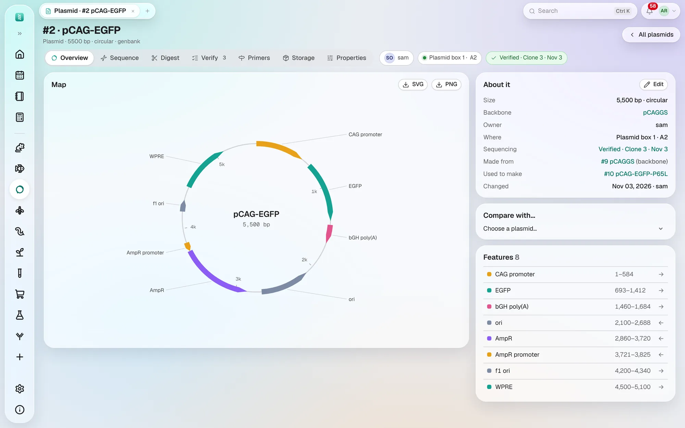
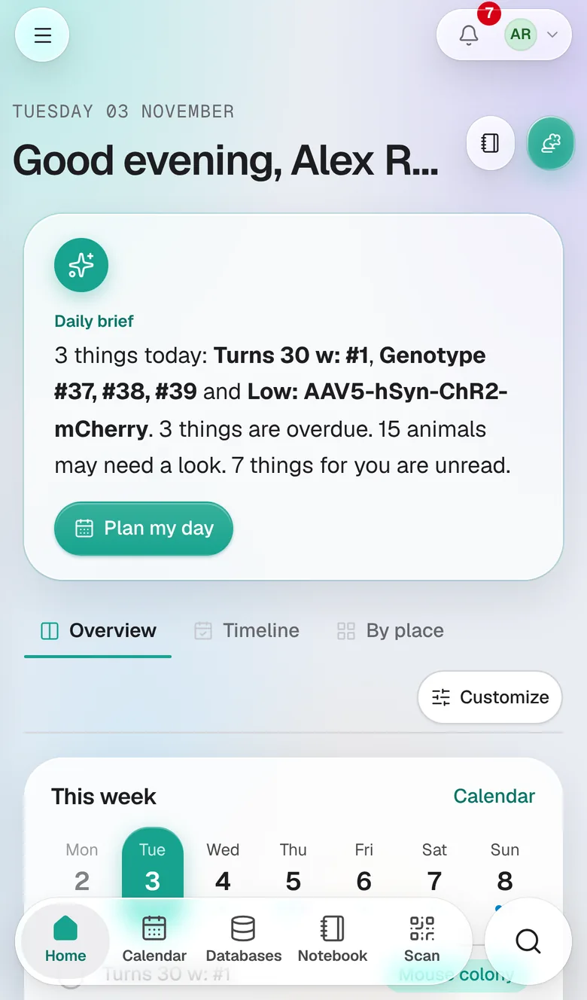
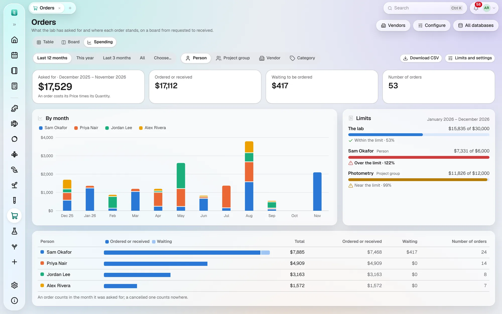
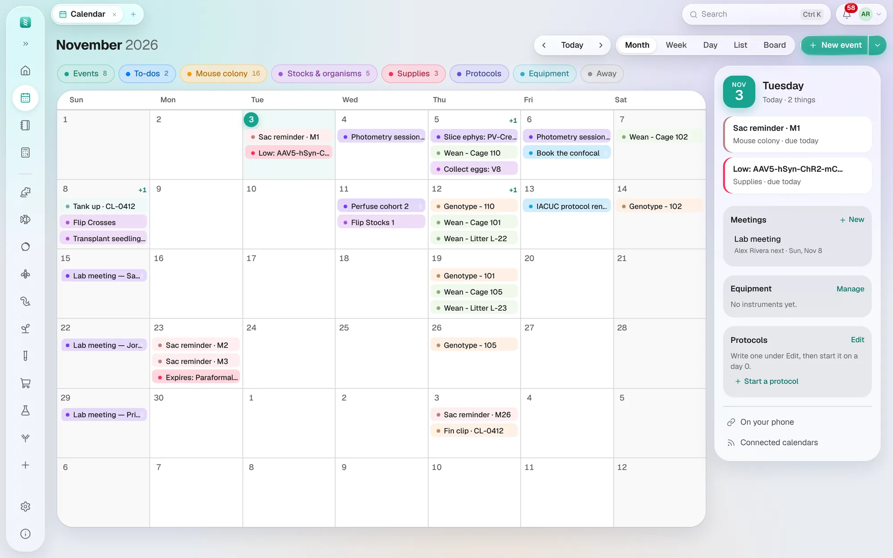

Version 2.10.5What's new in this version
Your lab's animals, stocks and supplies. In one place.
BioManager replaces the spreadsheets, whiteboards and paper cage cards most labs run on. Edit records like a spreadsheet — underneath is a database that knows which mouse is in which cage, when a litter needs weaning, and which antibody is about to expire.
Nine things a lab does every week. Watch BioManager do each one.
Every morning, what needs doing today. Weanings, genotyping, vials to flip, expiring reagents and the next 14 days, worked out from the databases your lab keeps.
- Runs on
- macOS, Windows, Linux, Android, and any browser
- Price
- Free and open source, under the MIT licence
- Your data
- Stays on your computer or your lab's own server
For lab members
Manage your own lines, fish, stocks and samples without hunting through someone else's spreadsheet.
For lab managers & PIs
A census that is actually complete: who owns what, which cages are idle, what is overdue.
For multi-organism labs
Mice, fish, flies, worms and plants side by side, and a database for anything else you keep, set up in minutes.
One database for each thing you keep. Only what your lab keeps appears.

Plasmids
Phones and cage cards
Samples, orders and reagents
Calendar- Mouse colonyMice, cages, litters and breeders, from birth to weaning: racks laid out like yours, and genotyping and weaning dates worked out for you.
- ZebrafishTanks on racks, fish as groups or individuals, matings and clutches, lines with ZFIN names, and water quality.
- Flies and wormsVials and plates on racks, with flips that follow the temperature.
- Plants and field cropsSowings, trays or plots, and the seed you harvest and sow again, a generation at a time.
- Any other organismA database for any other organism, described in your own words.
- PlasmidsPlasmid records with their map, sequence and protein, their digests and gels, the primers that bind them, the clones checked by sequencing, and the box each tube is in.
- Samples, orders and reagentsSamples, orders, reagents, chemicals, antibodies, viruses, primers, glycerol stocks and cell lines.
- ExperimentsTreatment groups, doses from body weight, readouts and the stats, for every animal.
- CalendarExperiments, to-dos and bookings, with the colony's dates filled in for you.
- Notebook and utilitiesNotebook pages, paper notes, protocols, data sheets, signing, and the bench calculators.
- Phones and cage cardsUse BioManager on a phone, and print cage cards and labels that open records when scanned.
Yours to keep. Free, and nothing locked in.
- Your data stays yours.Your records never leave your computer or your lab's server unless you connect a calendar or email. Once a day BioManager sends its makers anonymous counts, never names, which an admin can switch off.
- Nothing is locked in.Settings → Export my data downloads every record you keep, whenever you like.
- Free, for good.Released under the MIT licence: use it, share it, change it.